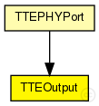
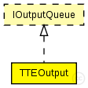

This documentation is released under the Creative Commons license
This documentation is released under the Creative Commons licenseModule for outgoing traffic to MAC layer. The module maintains the adherence of priorities for all traffic classes.
TODO: Statistics for rate-constrained queue lengths (per priority if possible)
TODO: Better documentation of behaviour!
See also: EtherLLC, IMacRelayUnit, IOutputQueue
Author: Till Steinbach
The following diagram shows usage relationships between types. Unresolved types are missing from the diagram.
The following diagram shows inheritance relationships for this type. Unresolved types are missing from the diagram.
| Name | Type | Description |
|---|---|---|
| TTEPHYPort | compound module |
The TTEPHYPort is a compund module that contains the TTEOutput, TTEInput and MAC (EtherMACFullDuplex) It represents a physical port for a TTEthernet device (Switch or Host) |
| Name | Type | Default value | Description |
|---|---|---|---|
| tt_buffers | string | "" |
Comma seperated list of TTBuffers that send messages to this port |
| Name | Value | Description |
|---|---|---|
| display | i=block/tx |
| Name | Direction | Size | Description |
|---|---|---|---|
| in | input |
Input for best-effort frames from the upper layer (EtherLLC or IMacRelayUnit) |
|
| out | output |
Output to the lower layer (MAC layer) |
|
| TTin | input |
Input for time-triggered frames from the buffers |
|
| RCin | input |
Input for rate-constrained frames from the buffers |
| Name | Title | Source | Record | Unit | Interpolation Mode |
|---|---|---|---|---|---|
| ttQueueLength | TT-Queue Length | vector | sample-hold | ||
| beQueueLength | BE-Queue Length | vector | sample-hold |
// // Module for outgoing traffic to MAC layer. The module maintains the adherence of priorities // for all traffic classes. // // @todo Statistics for rate-constrained queue lengths (per priority if possible) // @todo Better documentation of behaviour! // // @see EtherLLC, IMacRelayUnit, IOutputQueue // // @author Till Steinbach simple TTEOutput like IOutputQueue { parameters: @display("i=block/tx"); //Statistic of the queue length of time-triggered frames @statistic[ttQueueLength](title="TT-Queue Length"; record=vector; interpolationmode=sample-hold); //Statistic of the queue length of best-effort frames @statistic[beQueueLength](title="BE-Queue Length"; record=vector; interpolationmode=sample-hold); //Comma seperated list of TTBuffers that send messages to this port string tt_buffers = ""; gates: //Input for best-effort frames from the upper layer (EtherLLC or IMacRelayUnit) input in @labels(EtherFrame); //Output to the lower layer (MAC layer) output out @labels(EtherFrame); //Input for time-triggered frames from the buffers input TTin @labels(CTFrame); //Input for rate-constrained frames from the buffers input RCin @labels(CTFrame); }
This documentation is released under the Creative Commons license